Exchanging assignment files#
Distributing assignments to students and collecting them can be a logistical nightmare. If you are running nbgrader on a server, some of this pain can be relieved by relying on nbgrader’s built-in functionality for releasing and collecting assignments on the instructor’s side, and fetching and submitting assignments on the student’s side.
This page describes the built-in implementation of an exchange directory coupled with instructor and student interfaces - both integrated in the Jupyter interface and via the command line. Since nbgrader 0.7.0, the exchange is modular, and a different implementation could be used (with the same user interface as below).
Setting up the exchange#
After an assignment has been created using nbgrader generate_assignment, the instructor must actually release that assignment to students. If the class is being taught on a single filesystem, then the instructor may use nbgrader release_assignment to copy the assignment files to a shared location on the filesystem for students to then download.
First, we must specify a few configuration options. To do this, we’ll create a nbgrader_config.py file that will get automatically loaded when we run nbgrader:
%%file nbgrader_config.py
c = get_config()
c.CourseDirectory.course_id = "example_course"
c.Exchange.root = "/tmp/exchange"
Writing nbgrader_config.py
In the config file, we’ve specified the “exchange” directory to be /tmp/exchange. This directory must exist before running nbgrader, and it must be readable and writable by all users, so we’ll first create it and configure the appropriate permissions:
%%bash
# remove existing directory, so we can start fresh for demo purposes
rm -rf /tmp/exchange
# create the exchange directory, with write permissions for everyone
mkdir /tmp/exchange
chmod ugo+rw /tmp/exchange
Releasing assignments#
From the formgrader#
Using the formgrader extension, you may release assignments by clicking on the “release” button:
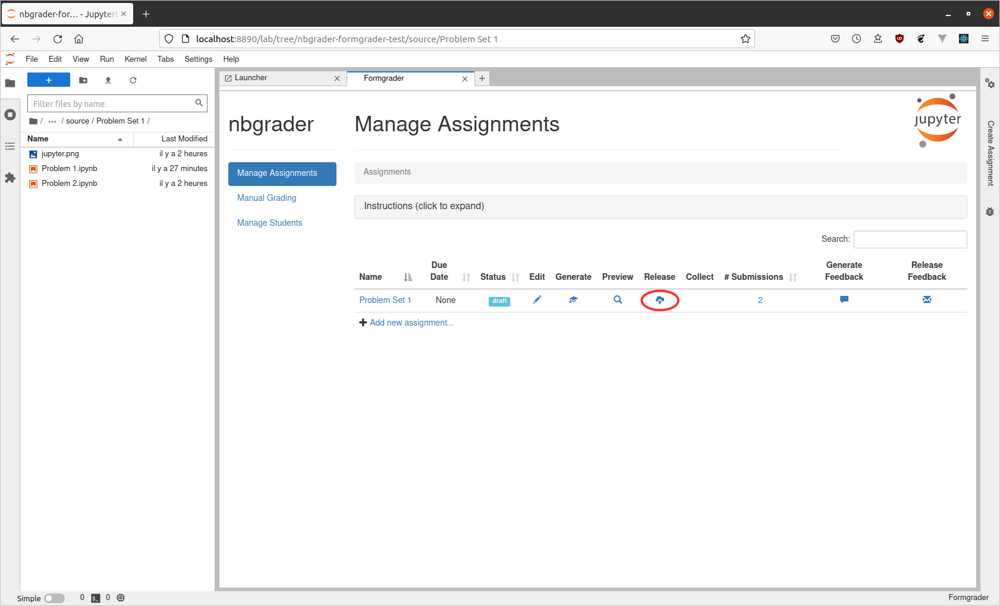
Note that for the “release” button to become available, the course_id option must be set in nbgrader_config.py.
Once completed, you will see a pop-up window with log output:
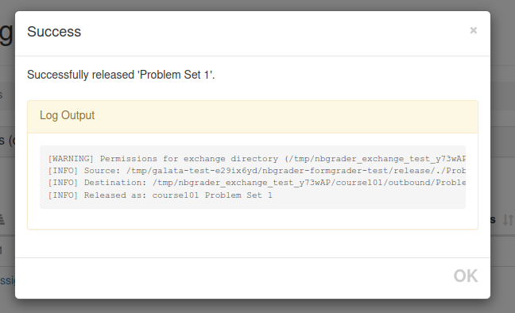
If you decide you want to “un-release” an assignment, you may do so by clicking again on the “release” button (which is now an “x”). However, note that students who have already downloaded the assignment will still have access to their downloaded copy. Unreleasing an assignment only prevents more students from downloading it.
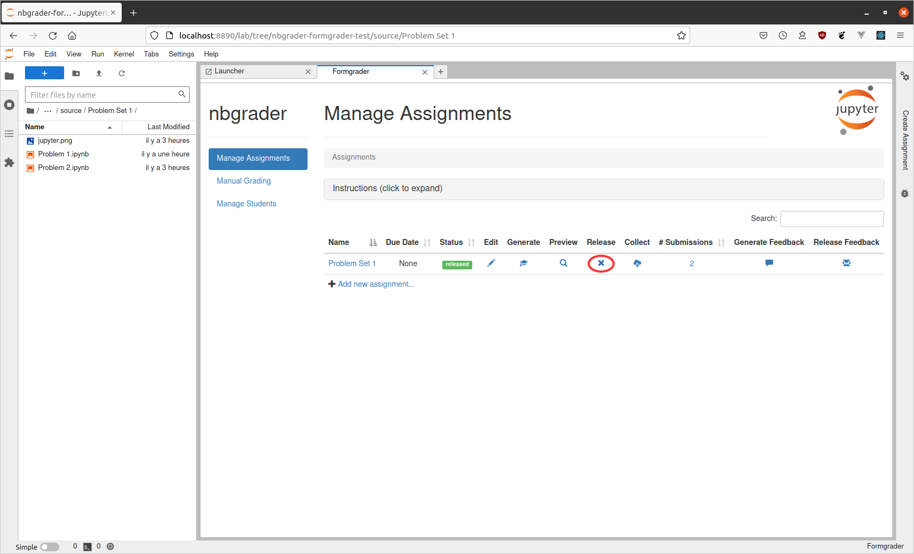
From the command line#
Now that we have the directory created, we can actually run nbgrader release_assignment (and as with the other nbgrader commands for instructors, this must be run from the root of the course directory):
%%bash
nbgrader release_assignment "ps1"
[ReleaseAssignmentApp | INFO] Source: /Users/langlois/2026/ens/L3-AlgoGraphes/ComputerLab-L3/.venv/l
ib/python3.13/site-packages/nbgrader/docs/source/user_guide/release/./ps1
[ReleaseAssignmentApp | IN
FO] Destination: /tmp/exchange/example_course/outbound/ps1
[ReleaseAssignmentApp | INFO] Released as: example_course ps1
Finally, you can verify that the assignment has been appropriately released by running the nbgrader list command:
%%bash
nbgrader list
[ListApp | INFO] Released assignments:
[ListApp | INFO] example_course ps1
Note that there should only ever be one instructor who runs the nbgrader release_assignment and nbgrader collect commands (and there should probably only be one instructor – the same instructor – who runs nbgrader generate_assignment, nbgrader autograde and the formgrader as well). However this does not mean that only one instructor can do the grading, it just means that only one instructor manages the assignment files. Other instructors can still perform grading by accessing the notebook where the formgrader is running.
Fetching assignments#
From the student’s perspective, they can list what assignments have been released, and then fetch a copy of the assignment to work on. First, we’ll create a temporary directory to represent the student’s home directory:
%%bash
# remove the fake student home directory if it exists, for demo purposes
rm -rf /tmp/student_home
# create the fake student home directory and switch to it
mkdir /tmp/student_home
If you are not using the default exchange directory (as is the case here), you will additionally need to provide your students with a configuration file that sets the appropriate directory for them:
%%file /tmp/student_home/nbgrader_config.py
c = get_config()
c.Exchange.root = '/tmp/exchange'
c.CourseDirectory.course_id = "example_course"
Writing /tmp/student_home/nbgrader_config.py
From the notebook dashboard#
After which you can open “Assignments” tab from Jupyter Lab command palette (Command/Ctrl + Shift + c) and typing “Assignment List”:
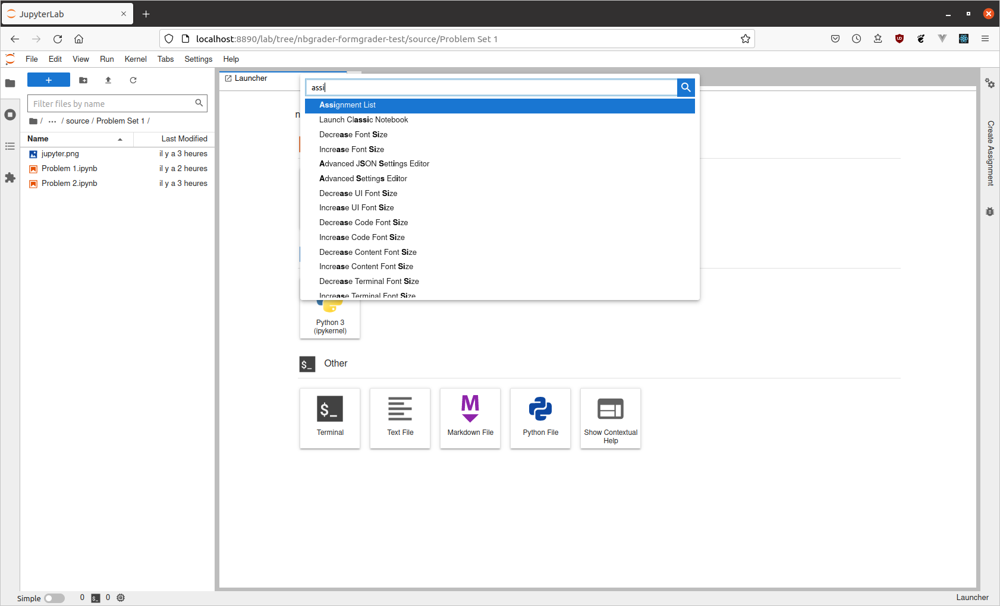
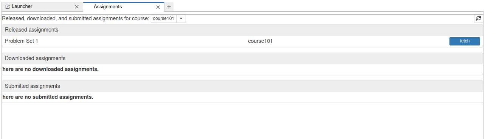
The image above shows that there has been one assignment released (“Problem Set 1”) for the class “example_course”. To get this assignment, students can click the “Fetch” button (analogous to running nbgrader fetch_assignment 'Problem Set 1' --course example_course. Note: this assumes nbgrader is always run from the root of the notebook server, which on JupyterHub is most likely the root of the user’s home directory.
After the assignment is fetched, it will appear in the list of “Downloaded assignments”:
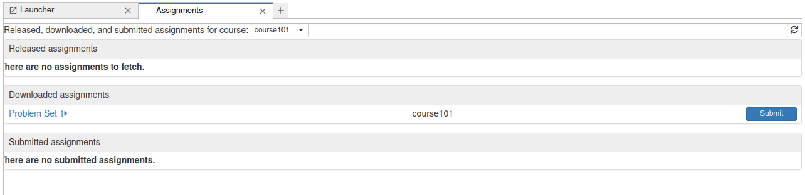
Students can click on the name of the assignment to expand it and see all the notebooks in the assignment:
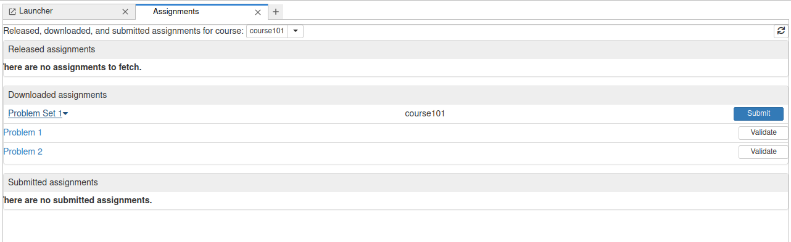
Clicking on a particular notebook will open it in a new tab in Jupyter Lab.
From the command line#
From the student’s perspective, they can see what assignments have been released using nbgrader list, and passing the name of the class:
%%bash
export HOME=/tmp/student_home && cd $HOME
nbgrader list
[ListApp | INFO] Released assignments:
[ListApp | INFO] example_course ps1
They can then fetch an assignment for that class using nbgrader fetch_assignment and passing the name of the class and the name of the assignment:
%%bash
export HOME=/tmp/student_home && cd $HOME
nbgrader fetch_assignment "ps1"
[FetchAssignmentApp | INFO] Source: /tmp/exchange/example_course/outbound/ps1
[FetchAssignmentApp |
INFO] Destination: /private/tmp/student_home/ps1
[FetchAssignmentApp | INFO] Fetched as: example_course ps1
Note that running nbgrader fetch_assignment copies the assignment files from the exchange directory to the local directory, and therefore can be used from any directory:
%%bash
ls -l "/tmp/student_home/ps1"
total 48
-rw-r--r-- 1 langlois wheel 5733 22 sep 11:42 jupyter.png
-rw-r--r-- 1 langlois wheel
8515 22 sep 11:42 problem1.ipynb
-rw-r--r-- 1 langlois wheel 2416 22 sep 11:42 problem2.ipynb
Additionally, the nbgrader fetch_assignment (as well as nbgrader submit) command also does not rely on having access to the nbgrader database – the database is only used by instructors.
Submitting assignments#
From the Jupyter Lab dashboard#
After students have worked on the assignment for a while, but before submitting, they can validate that their notebooks pass the tests by clicking the “Validate” button (analogous to running nbgrader validate). If any tests fail, they will see a warning:
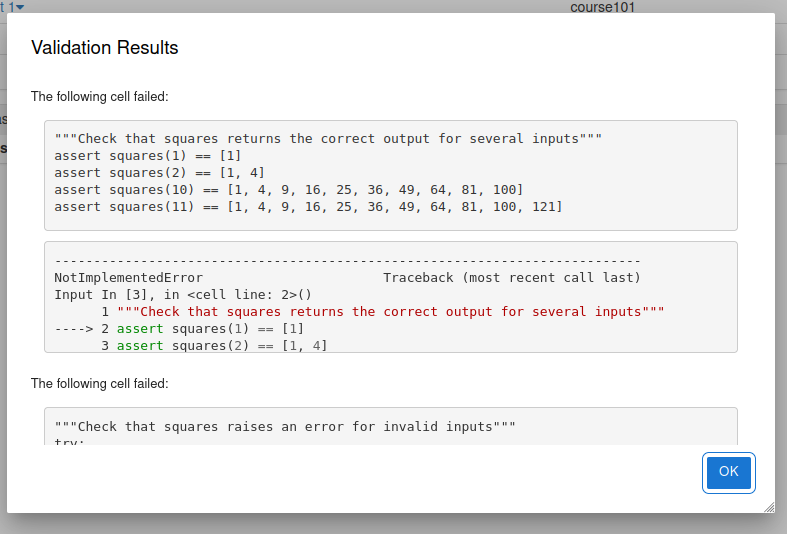
If there are no errors, they will see that the validation passes:
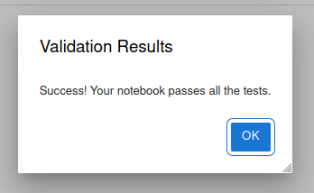
Once students have validated all the notebooks, they can click the “Submit” button to submit the assignment (analogous to running nbgrader submit ps1 --course example_course). Afterwards, it will show up in the list of submitted assignments (and also still in the list of downloaded assignments):
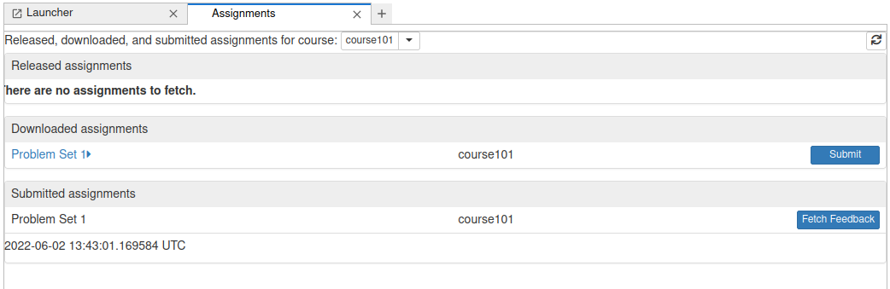
Students may submit an assignment as many times as they’d like. All copies of a submission will show up in the submitted assignments list, and when the instructor collects the assignments, they will get the most recent version of the assignment:
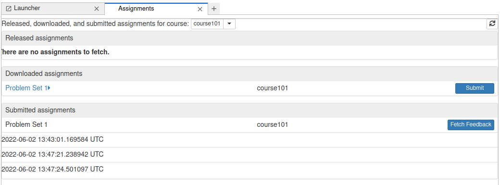
Similarly, if the strict option (in the student’s nbgrader_config.py file) is set to True, the students will not be able to submit an assignment with missing notebooks (for a given assignment):
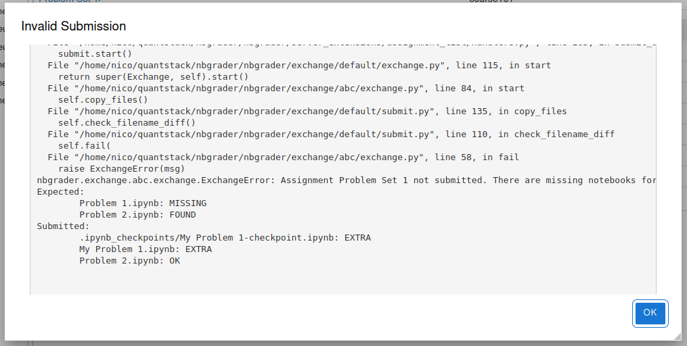
From the command line#
First, as a reminder, here is what the student’s nbgrader_config.py file looks like:
%%bash
cat /tmp/student_home/nbgrader_config.py
c = get_config()
c.Exchange.root = '/tmp/exchange'
c.CourseDirectory.course_id = "example_course"
After working on an assignment, the student can submit their version for grading using nbgrader submit and passing the name of the assignment and the name of the class:
%%bash
export HOME=/tmp/student_home && cd $HOME
nbgrader submit "ps1"
[SubmitApp | INFO] Source: /private/tmp/student_home/ps1
[SubmitApp | INFO] Destination: /tmp/exchan
ge/example_course/inbound/langlois+ps1+2026-09-22 09:42:22.022949 UTC+tJ0vQlxk3g5B
[SubmitApp | INFO] Submitted as: example_course ps1 2026-09-22 09:42:22.022949 UTC
Note that “the name of the assignment” really corresponds to “the name of a folder”. It just happens that, in our current directory, there is a folder called “ps1”:
%%bash
export HOME=/tmp/student_home && cd $HOME
ls -l "/tmp/student_home"
total 8
drwxr-xr-x 3 langlois wheel 96 22 sep 11:42 Library
-rw-r--r-- 1 langlois w
heel 99 22 sep 11:42 nbgrader_config.py
drwxr-xr-x 5 langlois wheel 160 22 sep 11:42 ps1
m
Students can see what assignments they have submitted using nbgrader list --inbound:
%%bash
export HOME=/tmp/student_home && cd $HOME
nbgrader list --inbound
[ListApp | INFO] Submitted assignments:
[ListApp | INFO] example_course langlois ps1 2026-09-22 09:4
2:22.022949 UTC (no feedback available)
Importantly, students can run nbgrader submit as many times as they want, and all submitted copies of the assignment will be preserved:
%%bash
export HOME=/tmp/student_home && cd $HOME
nbgrader submit "ps1"
[SubmitApp | INFO] Source: /private/tmp/student_home/ps1
[SubmitApp | INFO] Destination: /tmp/exchan
ge/example_course/inbound/langlois+ps1+2026-09-22 09:42:23.869191 UTC+3AkgO-5PYhH1
[SubmitApp | INFO] Submitted as: example_course ps1 2026-09-22 09:42:23.869191 UTC
We can see all versions that have been submitted by again running nbgrader list --inbound:
%%bash
export HOME=/tmp/student_home && cd $HOME
nbgrader list --inbound
[ListApp | INFO] Submitted assignments:
[ListApp | INFO] example_course langlois ps1 2026-09-22 09:4
2:22.022949 UTC (no feedback available)
[ListApp | INFO] example_course langlois ps1 2026-09-22 09:4
2:23.869191 UTC (no feedback available)
Note that the nbgrader submit (as well as nbgrader fetch_assignment) command also does not rely on having access to the nbgrader database – the database is only used by instructors.
nbgrader requires that the submitted notebook names match the released notebook names for each assignment. For example if a student were to rename one of the given assignment notebooks:
%%bash
export HOME=/tmp/student_home && cd $HOME
# assume the student renamed the assignment file
mv ps1/problem1.ipynb ps1/myproblem1.ipynb
nbgrader submit "ps1"
[SubmitApp | INFO] Source: /private/tmp/student_home/ps1
[SubmitApp | INFO] Destination: /tmp/exchan
ge/example_course/inbound/langlois+ps1+2026-09-22 09:42:25.706561 UTC+doORdh2zxrGv
[SubmitApp | WARNING] Possible missing notebooks and/or extra notebooks submitted for assignment ps1
:
Expected:
problem1.ipynb: MISSING
problem2.ipynb: FOUND
Submitted:
myproble
m1.ipynb: EXTRA
problem2.ipynb: OK
[SubmitApp | INFO] Submitted as: example_course ps1 2026-09-22 09:42:25.706561 UTC
By default this assignment will still be submitted however only the “FOUND” notebooks (for the given assignment) can be autograded and will appear on the formgrade extension. “EXTRA” notebooks will not be autograded and will not appear on the formgrade extension.
To ensure that students cannot submit an assignment with missing notebooks (for a given assignment) the strict option, in the student’s nbgrader_config.py file, can be set to True:
%%file /tmp/student_home/nbgrader_config.py
c = get_config()
c.Exchange.root = '/tmp/exchange'
c.CourseDirectory.course_id = "example_course"
c.ExchangeSubmit.strict = True
Overwriting /tmp/student_home/nbgrader_config.py
%%bash
export HOME=/tmp/student_home && cd $HOME
nbgrader submit "ps1" || true
[SubmitApp | INFO] Source: /private/tmp/student_home/ps1
[SubmitApp | INFO] Destination: /tmp/exchan
ge/example_course/inbound/langlois+ps1+2026-09-22 09:42:26.624352 UTC+ogkSvf8WhgYa
[SubmitApp | CRITICAL] Assignment ps1 not submitted. There are missing notebooks for the submission:
Expected:
problem1.ipynb: MISSING
problem2.ipynb: FOUND
Submitted:
myproblem
1.ipynb: EXTRA
problem2.ipynb: OK
[SubmitApp | ERROR] nbgrader submit failed
Collecting assignments#
First, as a reminder, here is what the instructor’s nbgrader_config.py file looks like:
%%bash
cat nbgrader_config.py
c = get_config()
c.CourseDirectory.course_id = "example_course"
c.Exchange.root = "/tmp/exchange"
From the formgrader#
From the formgrader extension, we can collect submissions by clicking on the “collect” button:
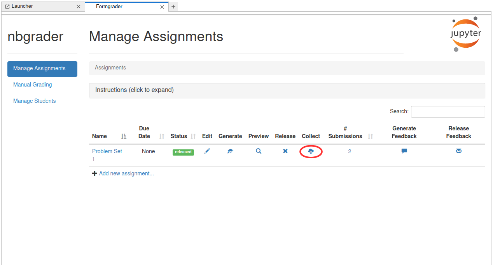
As with releasing, this will display a pop-up window when the operation is complete, telling you how many submissions were collected:
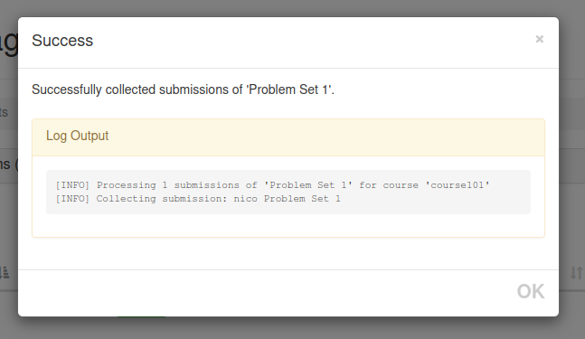
From here, you can click on the number of submissions to grade the collected submissions:
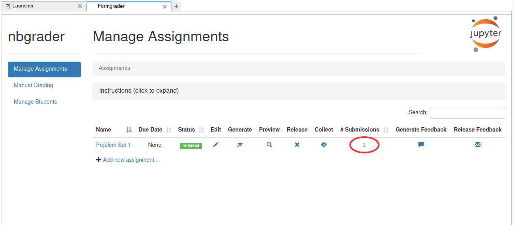
From the command line#
After students have submitted their assignments, the instructor can view what has been submitted with nbgrader list --inbound:
%%bash
nbgrader list --inbound
[ListApp | INFO] Submitted assignments:
[ListApp | INFO] example_course langlois ps1 2026-09-22 09:4
2:22.022949 UTC (no feedback available)
[ListApp | INFO] example_course langlois ps1 2026-09-22 09:4
2:23.869191 UTC (no feedback available)
[ListApp | INFO] example_course langlois ps1 2026-09-22 09:42:25.706561 UTC (no feedback available)
The instructor can then collect all submitted assignments with nbgrader collect and passing the name of the assignment (and as with the other nbgrader commands for instructors, this must be run from the root of the course directory):
%%bash
nbgrader collect "ps1"
[CollectApp | INFO] Processing 1 submissions of 'ps1' for course 'example_course'
[CollectApp | INFO] Collecting submission: langlois ps1
This will copy the student submissions to the submitted folder in a way that is automatically compatible with nbgrader autograde:
%%bash
ls -l submitted
total 0
drwxr-xr-x 3 langlois staff 96 7 sep 11:19 bitdiddle
drwxr-xr-x 3 langlois
staff 96 7 sep 11:19 hacker
drwxr-xr-x 3 langlois staff 96 22 sep 11:42 langloi
s
Note that there should only ever be one instructor who runs the nbgrader release_assignment and nbgrader collect commands (and there should probably only be one instructor – the same instructor – who runs nbgrader generate_assignment, nbgrader autograde and the formgrader as well). However this does not mean that only one instructor can do the grading, it just means that only one instructor manages the assignment files. Other instructors can still perform grading by accessing the notebook server running the formgrader.